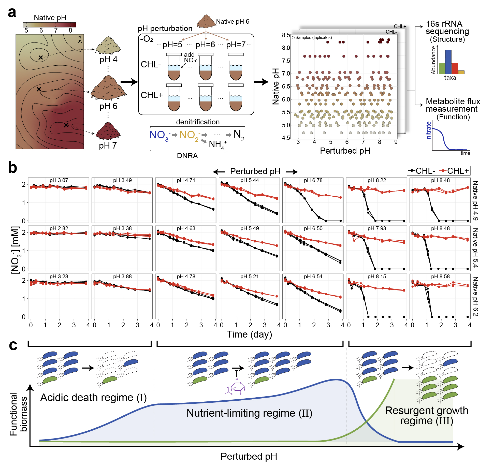
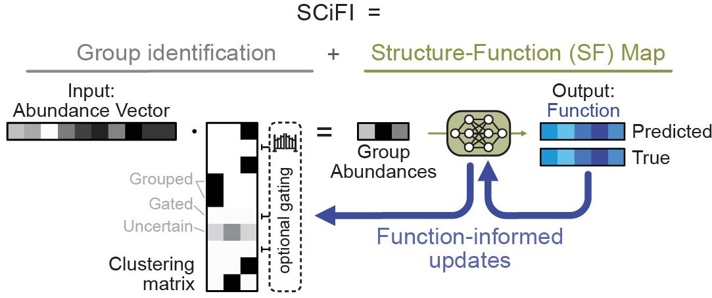
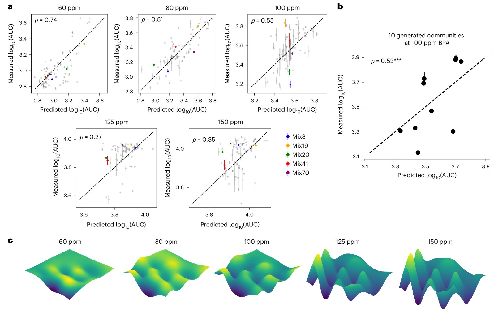
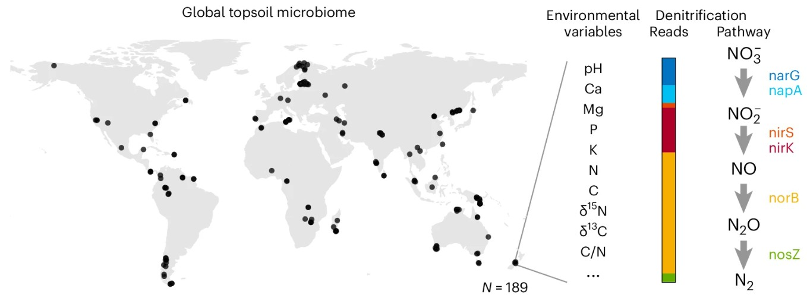

Lee, K. K., Liu S., Crocker, K., Wang, J., Huggins, D. R., Tikhonov, M., Mani, M., Kuehn, S. (2025). Functional regimes define soil microbiome response to environmental change.
Nature, 644, 1028–1038.

Complex soil microbiomes respond to environmental change in simple predictable ways.
Schmitt, M. S.,
Lee, K. K. (co-first author), Landsittel, J. A., Bunbury, F., Vitelli, V., Kuehn, S. (2026). Learning functional groups in complex microbiomes.
bioRxiv (under revision at
Cell Systems).

Our SCiFI neural-network based clustering algorithm can identify functional groups whose abundance accurately predicts microbiome function.
Landsittel, J., Howe, A., Mani, M., Lee, K. K. (corresponding author), Kuehn, S. Enzyme variants shape metabolic activity in microbial communities (in prep.).
Yousef, M.,
Lee, K. K., Tang, J., Mullen, P., Charisopoulos, V., Willett, R., Kuehn, S. (2026). Epistatic interactions inform rational design of synthetic microbial communities for bioremediation.
Nature Microbiology, 11, 1995–2007.

Observing structure-function landscapes of synthetic consortia degrading bisphenol-A (BPA) reveals that higher BPA concentrations lead to greater higher-order collective interactions.
Crocker, K.,
Lee, K. K., Chakraverti-Wuerthwein, M., Li, Z., Tikhonov, M., Mani, M., Gowda, K., Kuehn, S. (2024). Environmentally dependent interactions shape patterns in gene content across natural microbiomes.
Nature Microbiology, 9, 2022–2037.

Abundances of two genotypes (nar and nap) trade off with pH. We show that coexistence of these two genotypes at low pH is driven by nitrite toxicity.
Oliveira, R., Pandey, B.,
Lee, K. K., Yousef, M., …, Kuehn, S., Raman, A. (2024). Statistical design of a synthetic microbiome that clears a multi-drug resistant gut pathogen.
bioRxiv.
Lee, K. K., Park, Y., Kuehn, S. (2023). Robustness of microbiome function. Current Opinion in Systems Biology, 36, 100479.
Kim, H., Jeon, J., Lee, K. K., Lee, Y. H. (2022). Longitudinal transmission of bacterial and fungal communities from seed to seed in rice. Communications Biology, 5(1), 772.
Lee, K. K., Kim, H., Lee, Y. H. (2022). Cross-kingdom co-occurrence networks in the plant microbiome: importance and ecological interpretations. Frontiers in Microbiology, 13, 953300.
Kim, S., Park, J. S., Lee, J., Lee, K. K., Park, O. S., Choi, H. S., … Choi, Y. (2021). The DME demethylase regulates sporophyte gene expression, cell proliferation, differentiation, and meristem resurrection. PNAS, 118(29).
Kim, H., Lee, K. K. (co-first author), Jeon, J., Harris, W. A., Lee, Y. H. (2020). Domestication of Oryza species eco-evolutionarily shapes bacterial and fungal communities in rice seed. Microbiome, 8, 1–17.